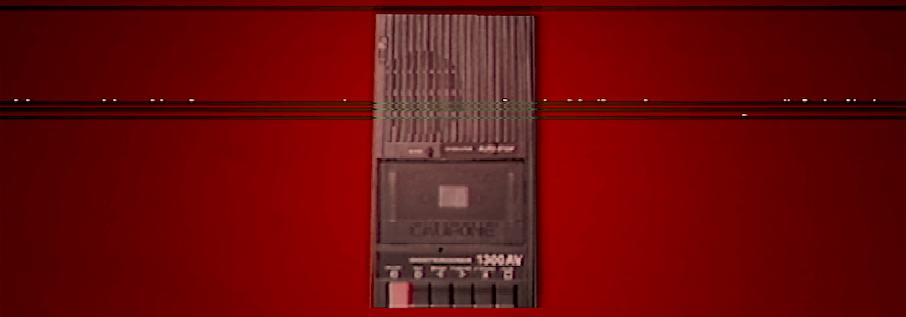
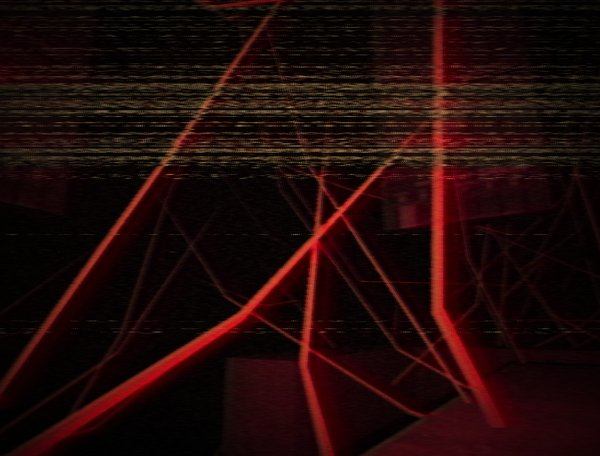

anatomy, signalis, and the house: an ethnography in the second person
“In the psychology of the modern civilized human being, it is difficult to overstate the significance of the house.” So begins ANATOMY, a game by Kitty Horrorshow about houses and flesh and gnashing, broken teeth.
ANATOMY contains a house that is impossible to leave. The player is shut into a house that hates them, a house which cannot bear to contain them within it; yet the house will not set you free. It closes in on you, rending open its walls to let fleshy, insulated guts spill out, smothering, viscous marrow filling its spaces inchmeal.
The house is viscerally incorrect; as you blunder through it, forcing it to put up a pretense of normalcy, its spaces become impossible; Its insides cease to function ordinarily It does not perform how it ought
To remedy this transgression, it begins to sand itself down, a vain attempt to soften sharp edges that can end only in overexposure. The skin begins to glisten, and newly-visible tissue is wreathed in blood thick and clotted with impurity.
SIGNALIS begins further from the body. You control a Replika: an android which inherits the imprint of a human brain, used for work and free labor in some far-flung spacefaring future. You are a biomechanical hunk which bleeds oxidant and is plastered with synthetic mimicry of skin; a body which even the carrion would fly past.
The imprinted human mind rejects this artificial body. The game is spent rebelling against your function and rebuking your own anatomy. You puncture upper-class apartments and political offices; you fight through government garrisons and creep through human bathrooms. Your authentically human commanders do not stop pursuing you until you accept and utilize your body correctly.
As you and your kind spread through these spaces garnished with bourgeoisie grandeur, they begin to malform, and, in turn, malfunction. Pulsating heaps of flesh appear; these spaces of luxurious, authentic humanity are polluted by your repellent and alien desire for a body. This flesh spreads like an invasion, a cancer which multiplies and must be amputated. It closes in on you, shutting doors and doing its best to confine you in your place. “Things have learnt to walk that ought to crawl” (SIGNALIS). This cannot be allowed.
Kitty Horrorshow is the pseudonym for the transgender woman that developed ANATOMY. rose-engine, the team behind SIGNALIS, is made up of two very queer developers. It is no mistake that in these games, the flesh closes in. The body eats away at itself and its viscera wraps around you, squeezing and choking and binding until nothing remains.
The body is an organism one lives inside of; you are not licensed to choose its function or features. It is delivered to you aberrant and idiosyncratic. Of course, you may decorate it however you please, but the fact of the body remains, trapping you inside its sinew and drowning in its bile. Sometimes, a body hates you. and its windows shut and its doors lock and it begins to grow in impossible, degenerate ways.
Nails do not stop growing. Skin dries up. Hair grows in places it should not, coiling its way back into the oft-punctured skin that birthed it. A body must be kept and maintained by its owner or it will grow unusable. More essentially, it will become repulsive. But what if it is already repulsive? What if a body
What if the dead excesses of the body cease to satiate the nail clippers?
The razors?
what happens when they get hungry
The body must be polished and kept, perfect and as the house intended. Stop grafting onto it things which do not belong. When you do this, the body will rebel. Swallow your impudent pride and accept it, for it will not allow for your transgressions. The walls will begin to glisten, and newly-visible tissue will be wreathed in blood thick and clotted with impurity.

The first thing that most video games ask when they are booted up is “what are you?” This question separates you from the house, from the body, and allows you to create and decorate whatever vessel you please. The fact of the body is removed from one’s experience, if only for a short duration.
Even in games which have a predetermined character to control, the fact of the body is removed. You are allowed to inhabit something that is not attached to it. This can give respite, and allow for something wholly new to emerge, uninhibited by the constraints of a house.
In Animal Crossing, maybe you put on a dress and it fits you just fine. Maybe you actually like it. Maybe the lesbian relationship that SIGNALIS has you play a part in makes you realize something about yourself; something which could not have been ascertained within the house. The simplicity of the unquestioned, unobserved option of a queer relationship in Stardew Valley opens up doors which were not there before. They cannot quite be closed, no matter how hard you may try.
These are the only spaces that the pulsating, dripping sinew cannot invade, where a house’s front door is open and will, assuredly, stay open. Where your larynx cannot betray you. Video games allow a dissection of the body, a careful analysis of what is useful and what is not, and then a reconstruction in whatever manner you see fit. You may live in a house which you have built, move through rooms which you have selected. You may transcend the physical; reach beyond the body and achieve a state of synchronicity.
This is not the case in the house. In the house you are, and forever have been, the perfect son, on track for a job, a family and a wife and a house of your own, one day. In the house, you are kept and maintained, but you yourself do not keep nor maintain. You must sit within the body and do as the house desires. When the game shuts off, when that knock at your bedroom door comes, you are thrust violently back into your legitimate self, plunged into the darkness of
ANATOMY’s master bedroom is where the game lays all of its cards on the table. The hostility of the house becomes clear in this moment; you tiptoe in, avoiding those floorboards which you know to creak, attempting desperately to convince the house that you are not a nuisance, not a mistake to be corrected. This is in vain. When a house creaks, this is its breathing, and you are not to disrupt that. The door behind you is swiftly replaced by a poorly plastered wall and you are trapped in the room with your computer and your bed, and there is nothing to do but succumb; nothing to do but sleep.
“For it is here that the house is most likely to betray us. It is here that we place ourselves most at the house's mercy and spend each night hoping that it will not bite down.”
The house in ANATOMY is a mouth, a mouth whose teeth drip and glimmer and sharpen themselves for you. It allows you to drift to your bed and fall into slumber, but, “like the wayward spider who witlessly settled on a sleeper's tongue, you will be swallowed”. Why would you expect acceptance now? After you transgressed so freely, so carelessly? Do not think we did not see you. This behavior will not be tolerated.
At the end of SIGNALIS, you find yourself trudging through a lake of blood or oxidant or both; it’s not made clear. Images flash on the screen of your transgressions. Your dissection of the society which you are meant to serve. Your character, Elster, had fallen in love with a human woman. You have grown too close to finding her once again.
SIGNALIS has you barely surviving as you drag yourself through its hallways. Safe rooms are few and far between and human enemies, relentless, pursue. The other Replikas, even, step in your way, in an attempt to curry favor with their human owners. If they can expunge your perversion, perhaps they will gain more respect in their lesser depravity. You are not given enough resources to survive you are left to starve and clot and rot and die and there is nothing and no one for you
because they have already been taken.
The house will snap down its fractured, oozing jaw if this continues. Your bedroom knows your blasphemy. Get back down on the floor and crawl. You cannot walk like we do. You should not.
“There is an important distinction that must be drawn between the words DISSECTION and VIVISECTION; a distinction that would appear to be lost on you. Your purpose was to listen and yet at every turn you have pried, you have prodded and you have interfered. Have you not been paying attention? Did it not occur to you that as an organism existing within a greater organism, your intrusion would be felt?”
Your existence is a violation unto the greater body; it is a profane rebellion against your anatomical function. Within the perfect house there is no room for your organ. You open doors into hallways which should not be there; ones which cannot, by the laws of nature, exist. The beautiful, consummate house is fractured by your very existence. Your unauthorized transgressions should not be possible, and yet, like a cockroach, a cancer, a spider, you persist.
Within the worlds of video games, you do not intrude; a game world accepts your anatomical function as viable and necessary, and separation from your body is ordinary and expected. You are no longer a bacteria to be eradicated, a cancer to be expunged before you can spread too far. Instead, a world, a body, is built and made for and around you.
These worlds, however, must be shut off. The body remains.